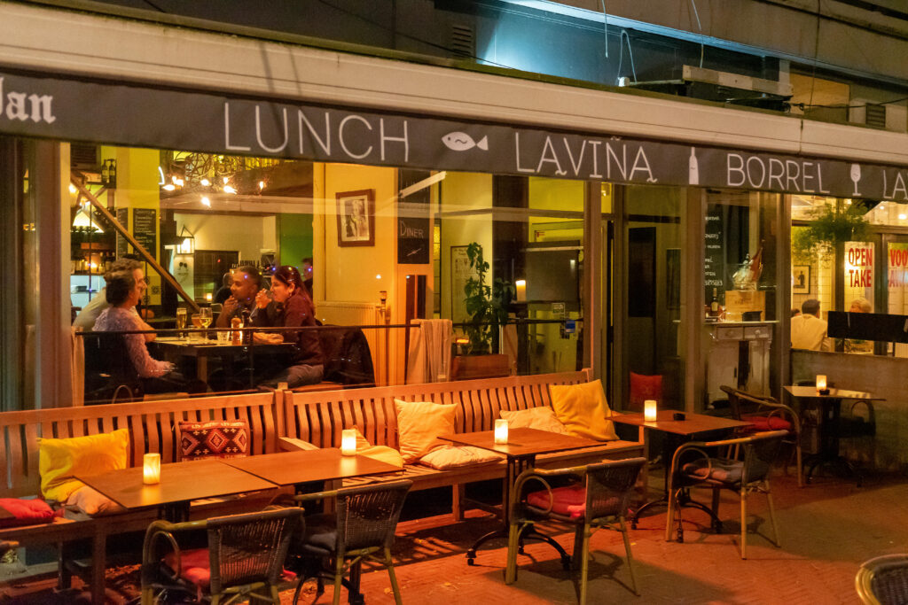
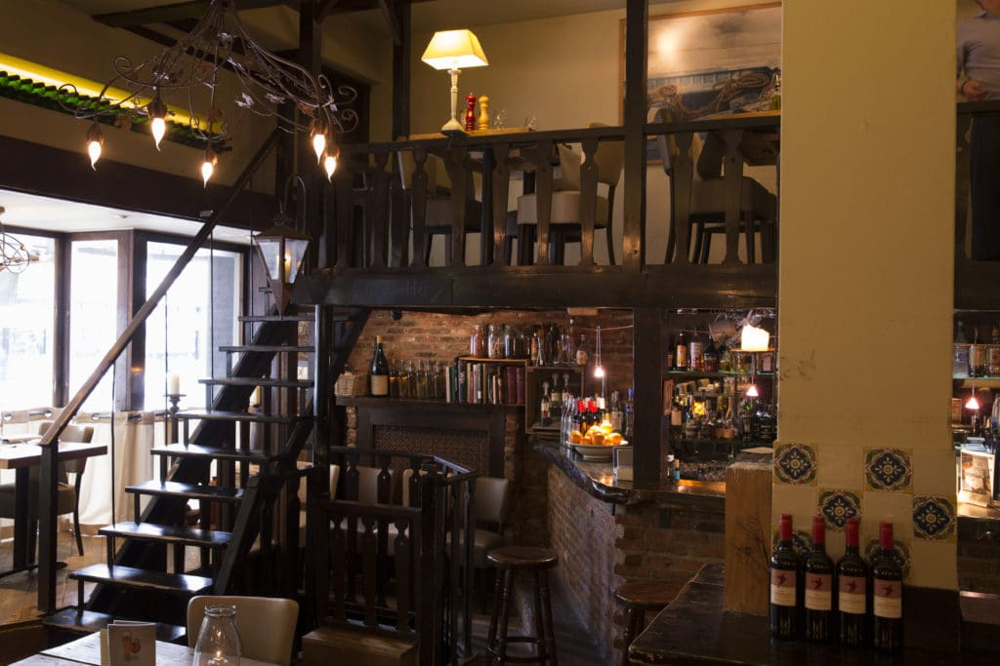
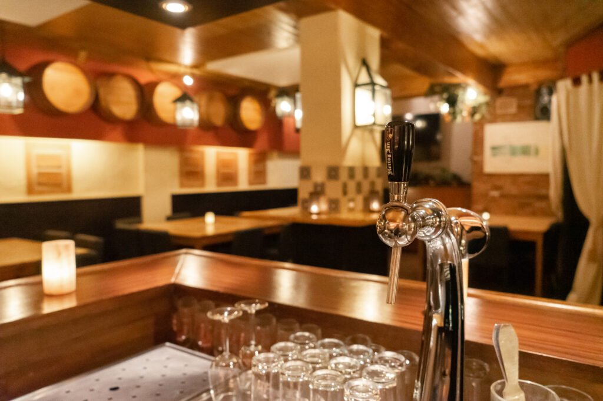
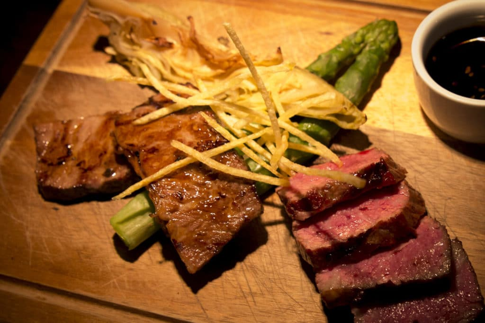
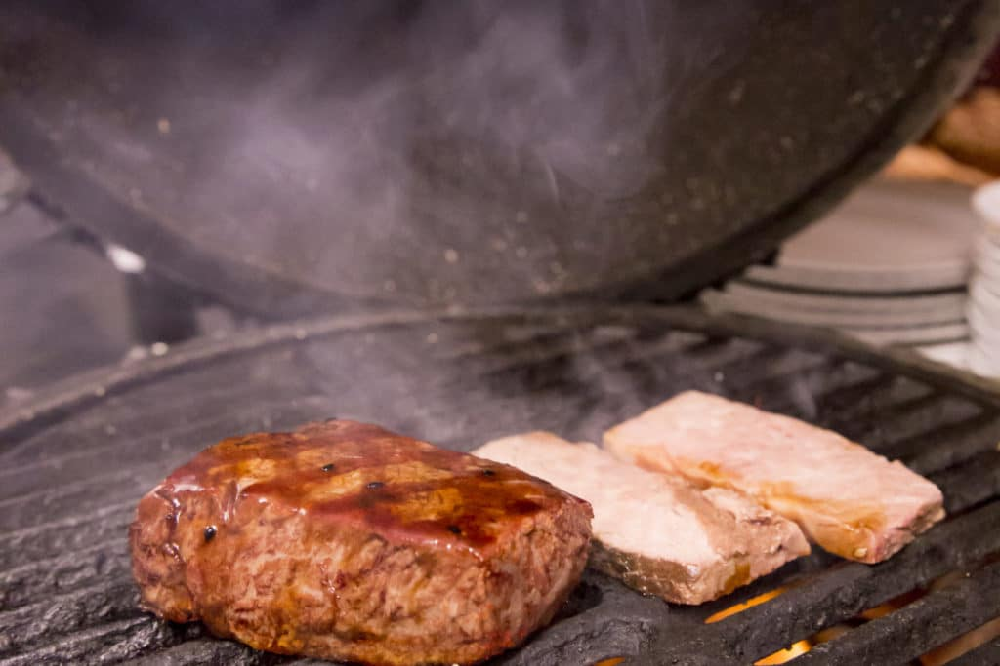
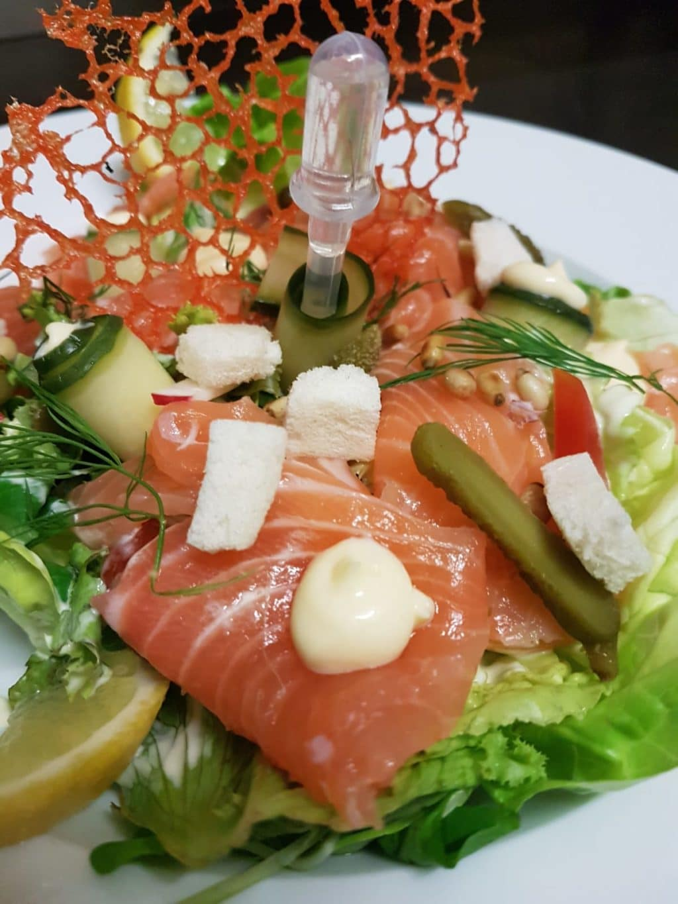
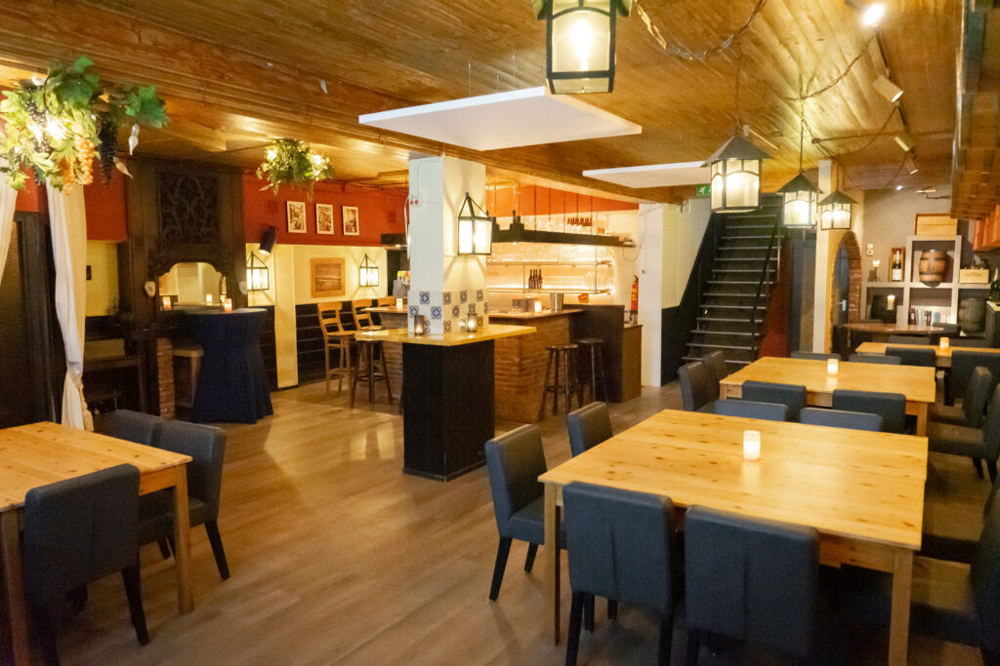
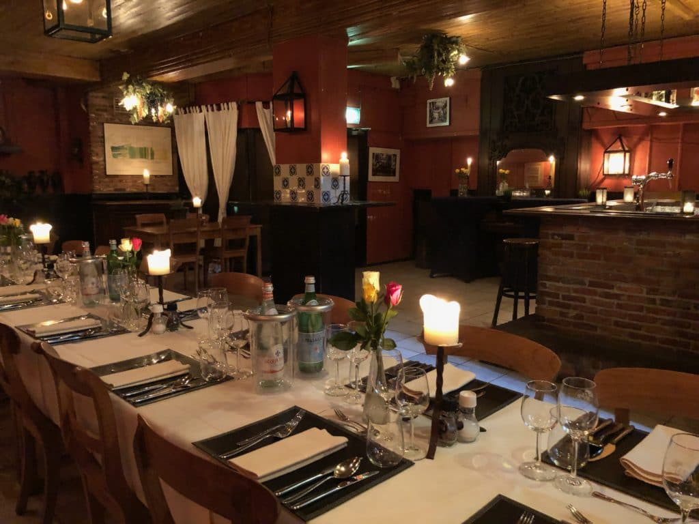

Theresiastraat 39, Den Haag
La Viña
De gezellige bar-bistro in de Haagse Theresiastraat. Een goed glas op ons zonnige terras of een heerlijk diner in ons knusse restaurant.
Maandag t/m vrijdag open van 16:00 tot 22:00
Welkom bij La Viña
Bij La Viña kunt u genieten van een verscheidenheid aan specialiteiten.
Een goed glas op ons zonnige terras of een heerlijk diner in ons knusse restaurant. Tevens is onze wijnkelder af te huren voor diners, borrels, feesten en partijen.
La Viña begon in de jaren zeventig als sherrybodega. Vandaag schuiven er buurtbewoners aan, en net zo goed gasten van de ministeries, de rechtbank en de universiteit om de hoek.

Borrelkaart
Voor bij de wijn, het bier of de cava. Op het terras of binnen aan de bar.

Heeft u voedselallergie(en)? Laat het ons weten.
Wijnkaart
Van een frisse Sauvignon Blanc per glas tot een Saint-Emilion per fles. Vraag gerust wat er goed bij uw borrel of diner past.
Wit
- LustSauvignon Blanc, lekker fris€ 4,50€ 21,50
- Cum LaudeChardonnay, vol met een klein beetje eikenhout€ 4,75€ 23,00
- La di MottePinot Grigio, fris en soepel€ 5,90€ 28,50
- Cava Jaume Serramousserend · Macabeo, Xarel-lo, Parellada, aromatisch en fruitig€ 5,25€ 26,50
Rosé
- La PlumeCinsault, elegant met een hint van rode bessen€ 4,50€ 21,50
Rood
- La PlumeCabernet Sauvignon, zachte doch krachtige, fruitige smaak€ 4,50€ 21,50
- Cum LaudeMerlot, rood fruit, zacht en verleidelijk€ 4,75€ 23,00
- RimbaldiMontepulciano d'Abruzzo, zwoel en zacht kruidig€ 5,20€ 26,00
Mousserend
- Cava Jaume SerraMacabeo, Xarel-lo, Parellada, aromatisch en fruitig€ 26,50
- Royer Champagne Reserve BrutVerfijnde, elegante Champagne€ 55,00
Wit
- Emmanuel DelaillePays d'Oc, Frankrijk · Chardonnay€ 27,50
- Domaine GaydaPays d'Oc, Frankrijk · Viognier€ 27,50
- Diez SiglosRueda, Spanje · Verdejo€ 27,50
- Esk ValleyHawkes Bay, Nieuw-Zeeland · Pinot Gris€ 33,50
- Domaine EngelElzas, Frankrijk · Gewurztraminer€ 36,00
- Clemens BuschMosel, Duitsland · Riesling Trocken€ 39,50
- Weingut LoimerNiederösterreich, Oostenrijk · Grüner Veltliner, organic€ 39,50
- Gerhard KarleBaden, Duitsland · Grauer Burgunder€ 41,50
- Alois LagederAlto Adige, Italië · Pinot Grigio€ 44,50
- Domaine DamptAOP Chablis, Bourgogne, Frankrijk · Chardonnay€ 45,50
- Bodegas Terras GaudaGalicië, Spanje · Albariño€ 46,50
- Jean-Max RogerAOP Pouilly Fumé, Loire, Frankrijk · Sauvignon Blanc€ 51,50
- IronyNapa Valley, V.S. · Chardonnay€ 60,00
Rosé
- Château CavalierCuvée Marafiance, Var, Provence, Frankrijk · Syrah, Rolle, Cinsault, Cabernet Sauvignon, Sémillon€ 35,00
Rood
- LaudaletPays d'Oc, Frankrijk · Syrah€ 26,50
- Tenuta Santa LuciaToscane, Italië · Sangiovese, Ciliegiolo€ 28,50
- VochéRioja Crianza, Spanje · Tempranillo€ 29,50
- Château Cap St. MartinBlaye, Côtes de Bordeaux, Frankrijk · Merlot, Cabernet Sauvignon, Malbec€ 29,50
- Chakana Nuna EstateMendoza, Argentinië · Malbec€ 31,50
- Guy AllionLes Parcs, Loire, Frankrijk · Pinot Noir€ 32,50
- Casa SilvaReserva, Colchagua Valley, Chili · Carmenère€ 33,50
- Masseria Li VeliSalento, Italië · Primitivo€ 39,50
- Domaine Fonte SanteVacqueyras, Rhône, Frankrijk · Grenache, Syrah, Mourvèdre€ 39,50
- Château Bel-AirAOP Saint-Emilion, Bordeaux, Frankrijk · Merlot, Cabernet Franc€ 51,50
Dessertwijnen
- Pedro Ximénez Nectar€ 6,50
- Casa Silva€ 6,50



Diner in het knusse restaurant
Onze kaart volgt de seizoenen, met specialiteiten als asperges, kreeft en wild wanneer het hun tijd is.
Wilt u weten wat er nu op de kaart staat, of een tafel reserveren? Bel of mail ons, we vertellen het u graag.
Heeft u voedselallergie(en)? Laat het ons weten.
De wijnkelder
In de benedenruimte van La Viña vindt u onze wijnkelder.
Deze ruimte is bij uitstek geschikt voor het houden van borrels, recepties, diners, feesten en partijen. Ons personeel laat u graag de ruimte zien en komt samen met u tot een passende invulling van uw wens.
Een greep uit de mogelijkheden


Menuprijzen
- Lunchmenu2 gangen, vanaf 20 personenvanaf € 25,00 p.p.
- Dinermenu3 gangenvanaf € 39,50 p.p.
- Tapasbuffetvanaf 20 personenvanaf € 29,50 p.p.
- Diverse buffettenwarme en koude gerechtenvanaf € 39,50 p.p.
- Borrelarrangementenwij voorzien u graag van een passend voorstelop aanvraag
Neem contact met ons op voor een scherpe offerte.
9,4op eet.nu
“Dit restaurant is al jaren voor ons the place to be als we lekker en gezellig uit eten willen. Een echte aanrader!!!”
Kom langs
Openingstijden
Maandag t/m vrijdag
16:00 – 22:00
Adres
Theresiastraat 392593 AA Den Haag